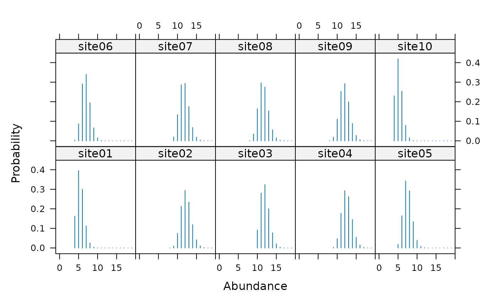

ranef in Package unmarkedranef-methods.RdEstimate posterior distributions of the random variables (latent abundance or occurrence) using empirical Bayes methods. These methods return an object storing the posterior distributions of the latent variables at each site, and for each year (primary period) in the case of open population models. See unmarkedRanef-class for methods used to manipulate the returned object.
signature(object = "unmarkedFitOccu")Computes the conditional distribution of occurrence given the data and the estimates of the fixed effects, \(Pr(z_i=1 | y_{ij}, \hat{\psi}_i, \hat{p}_{ij})\)
signature(object = "unmarkedFitOccuRN")Computes the conditional abundance distribution given the data and the estimates of the fixed effects, \(Pr(N_i=k | y_{ij}, \hat{\psi}_i, \hat{r}_{ij}) k = 0,1,\dots,K\)
signature(object = "unmarkedFitPCount")\(Pr(N_i=k | y_{ij}, \hat{\lambda}_i, \hat{p}_{ij}) k = 0,1,\dots,K\)
signature(object = "unmarkedFitMPois")\(Pr(N_i=k | y_{ij}, \hat{\lambda}_i, \hat{p}_{ij}) k = 0,1,\dots,K\)
signature(object = "unmarkedFitDS")\(Pr(N_i=k | y_{i,1:J}, \hat{\lambda}_i, \hat{\sigma}_{i}) k = 0,1,\dots,K\)
signature(object = "unmarkedFitGMM")\(Pr(M_i=k | y_{i,1:J,t}, \hat{\lambda}_i, \hat{\phi}_{it}, \hat{p}_{ijt}) k = 0,1,\dots,K\)
signature(object = "unmarkedFitGDS")\(Pr(M_i=k | y_{i,1:J,t}, \hat{\lambda}_i, \hat{\phi}_{it}, \hat{\sigma}_{it}) k = 0,1,\dots,K\)
signature(object = "unmarkedFitColExt")\(Pr(z_{it}=1 | y_{ijt}, \hat{\psi}_i, \hat{\gamma}_{it}, \hat{\epsilon}_{it}, \hat{p}_{ijt})\)
signature(object = "unmarkedFitPCO")\(Pr(N_{it}=k | y_{ijt}, \hat{\lambda}_i, \hat{\gamma}_{it}, \hat{\omega}_{it}, \hat{\iota}_{it}, \hat{p}_{ijt}) k = 0,1,...,K\)
From Carlin and Louis (1996): “... the Bayesian approach to inference depends on a prior distribution for the model parameters. This prior can depend on unknown parameters which in turn may follow some second-stage prior. This sequence of parameters and priors consitutes a hierarchical model. The hierarchy must stop at some point, with all remaining prior parameters assumed known. Rather than make this assumption, the basic empirical Bayes approach uses the observed data to estimate these final stage parameters (or to estimate the Bayes rule), and proceeds as in a standard Bayesian analysis.”
Empirical Bayes methods can underestimate the variance of the posterior distribution because they do not account for uncertainty in the hyperparameters (lambda or psi). Eventually, we hope to add methods to account for the uncertainty of the hyperparameters.
Note also that the posterior mode appears to exhibit some bias as an estimator or abundance. Consider using the posterior mean instead, even though it will not be an integer in general. More simulation studies are needed to evaluate the performance of empirical Bayes methods for these models.
Laird, N.M. and T.A. Louis. 1987. Empirical Bayes confidence intervals based on bootstrap samples. Journal of the American Statistical Association 82:739–750.
Carlin, B.P and T.A Louis. 1996. Bayes and Empirical Bayes Methods for Data Analysis. Chapman and Hall/CRC.
Royle, J.A and R.M. Dorazio. 2008. Hierarchical Modeling and Inference in Ecology. Academic Press.
# Simulate data under N-mixture model
set.seed(4564)
R <- 20
J <- 5
N <- rpois(R, 10)
y <- matrix(NA, R, J)
y[] <- rbinom(R*J, N, 0.5)
# Fit model
umf <- unmarkedFramePCount(y=y)
fm <- pcount(~1 ~1, umf, K=50)
# Estimates of conditional abundance distribution at each site
(re <- ranef(fm))
#> Mean Mode 2.5% 97.5%
#> [1,] 5.456813 5 4 8
#> [2,] 12.263316 12 10 15
#> [3,] 11.974866 12 10 15
#> [4,] 12.512518 12 10 15
#> [5,] 7.515203 7 6 10
#> [6,] 6.910344 7 5 9
#> [7,] 11.772003 12 10 14
#> [8,] 11.590102 11 9 14
#> [9,] 11.957508 12 10 15
#> [10,] 5.239116 5 4 7
#> [11,] 12.811799 13 10 16
#> [12,] 6.871755 7 5 9
#> [ reached getOption("max.print") -- omitted 8 rows ]
# Best Unbiased Predictors
bup(re, stat="mean") # Posterior mean
#> [1] 5.456813 12.263316 11.974866 12.512518 7.515203 6.910344 11.772003
#> [8] 11.590102 11.957508 5.239116 12.811799 6.871755 9.393458 13.201976
#> [15] 4.531943 7.803122 7.961635 6.365969 11.728030 13.016582
bup(re, stat="mode") # Posterior mode
#> [1] 5 12 12 12 7 7 12 11 12 5 13 7 9 13 4 8 8 6 12 13
confint(re, level=0.9) # 90% CI
#> 5% 95%
#> [1,] 4 7
#> [2,] 10 15
#> [3,] 10 14
#> [4,] 10 15
#> [5,] 6 9
#> [6,] 5 9
#> [7,] 10 14
#> [8,] 10 14
#> [9,] 10 14
#> [10,] 4 7
#> [11,] 11 15
#> [12,] 5 9
#> [13,] 8 11
#> [14,] 11 16
#> [15,] 3 6
#> [16,] 6 10
#> [17,] 6 10
#> [18,] 5 8
#> [19,] 10 14
#> [20,] 11 15
# Plots
plot(re, subset=site %in% c(1:10), layout=c(5, 2), xlim=c(-1,20))

# Compare estimates to truth
sum(N)
#> [1] 195
sum(bup(re))
#> [1] 190.8781
# Extract all values in convenient formats
post.df <- as(re, "data.frame")
head(post.df)
#> site N p
#> 1 1 0 0.0000000
#> 21 1 1 0.0000000
#> 41 1 2 0.0000000
#> 61 1 3 0.0000000
#> 81 1 4 0.1624616
#> 101 1 5 0.3956360
post.arr <- as(re, "array")
#Generate posterior predictive distribution for a function
#of random variables using predict()
#First, create a function that operates on a vector of
#length M (if you fit a single-season model) or a matrix of
#dimensions MxT (if a dynamic model), where
#M = nsites and T = n primary periods
#Our function will generate mean abundance for sites 1-10 and sites 11-20
myfunc <- function(x){ #x will be length 20 since M=20
#Mean of first 10 sites
group1 <- mean(x[1:10])
#Mean of sites 11-20
group2 <- mean(x[11:20])
#Naming elements of the output is optional but helpful
return(c(group1=group1, group2=group2))
}
#Get 100 samples of the values calculated in your function
(pr <- predict(re, func=myfunc, nsims=100))
#> [,1] [,2] [,3] [,4] [,5] [,6] [,7] [,8] [,9] [,10] [,11] [,12] [,13]
#> [,14] [,15] [,16] [,17] [,18] [,19] [,20] [,21] [,22] [,23] [,24] [,25]
#> [,26] [,27] [,28] [,29] [,30] [,31] [,32] [,33] [,34] [,35] [,36] [,37]
#> [,38] [,39] [,40] [,41] [,42] [,43] [,44] [,45] [,46] [,47] [,48] [,49]
#> [,50] [,51] [,52] [,53] [,54] [,55] [,56] [,57] [,58] [,59] [,60] [,61]
#> [,62] [,63] [,64] [,65] [,66] [,67] [,68] [,69] [,70] [,71] [,72] [,73]
#> [,74] [,75] [,76] [,77] [,78] [,79] [,80] [,81] [,82] [,83] [,84] [,85]
#> [,86] [,87] [,88] [,89] [,90] [,91] [,92] [,93] [,94] [,95] [,96] [,97]
#> [,98] [,99] [,100]
#> [ reached getOption("max.print") -- omitted 2 rows ]
#Summarize posterior
data.frame(mean=rowMeans(pr),
se=apply(pr, 1, stats::sd),
lower=apply(pr, 1, stats::quantile, 0.025),
upper=apply(pr, 1, stats::quantile, 0.975))
#> mean se lower upper
#> group1 9.687 0.3794347 8.8475 10.3000
#> group2 9.375 0.3828060 8.6000 10.1525
#Alternatively, you can return the posterior predictive distribution
#and run operations on it separately
(ppd <- posteriorSamples(re, nsims=100))
#> , , 1
#>
#> [,1]
#> [1,] 5
#> [2,] 11
#> [3,] 12
#> [4,] 13
#> [5,] 6
#> [6,] 8
#> [7,] 12
#> [8,] 12
#> [9,] 12
#> [10,] 5
#> [11,] 11
#> [12,] 7
#> [13,] 10
#> [14,] 13
#> [15,] 4
#> [16,] 8
#> [17,] 9
#> [18,] 8
#> [19,] 10
#> [20,] 11
#>
#> , , 2
#>
#> [,1]
#> [1,] 6
#> [2,] 12
#> [3,] 14
#> [4,] 12
#> [5,] 8
#> [6,] 8
#> [7,] 12
#> [8,] 10
#> [9,] 14
#> [10,] 5
#> [11,] 13
#> [12,] 8
#> [13,] 10
#> [14,] 11
#> [15,] 6
#> [16,] 9
#> [17,] 10
#> [18,] 6
#> [19,] 14
#> [20,] 13
#>
#> , , 3
#>
#> [,1]
#> [1,] 5
#> [2,] 12
#> [3,] 11
#> [4,] 12
#> [5,] 7
#> [6,] 7
#> [7,] 11
#> [8,] 12
#> [9,] 9
#> [10,] 4
#>
#> [ reached getOption("max.print") -- omitted 10 row(s) and 97 matrix slice(s) ]